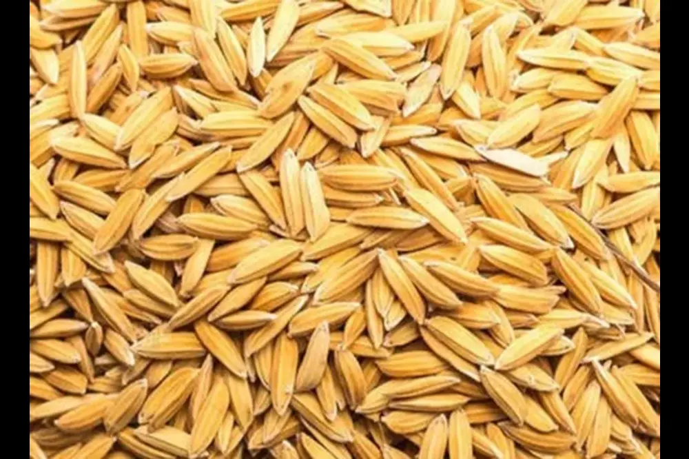
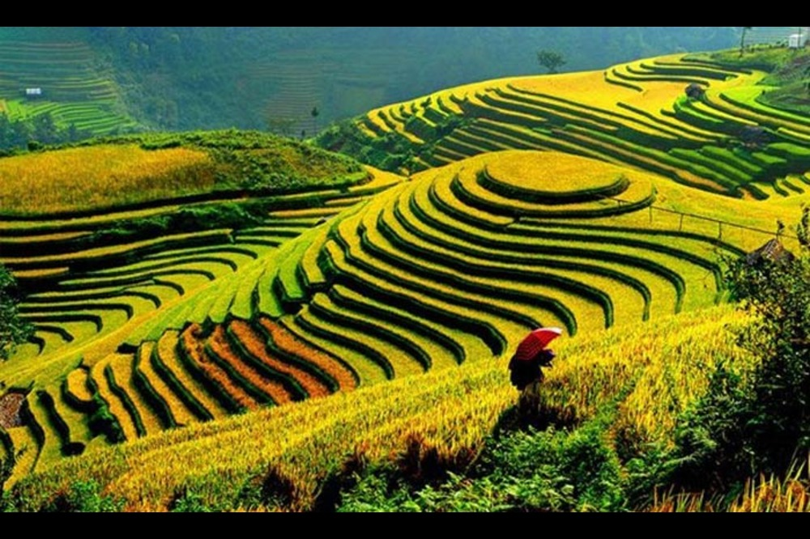
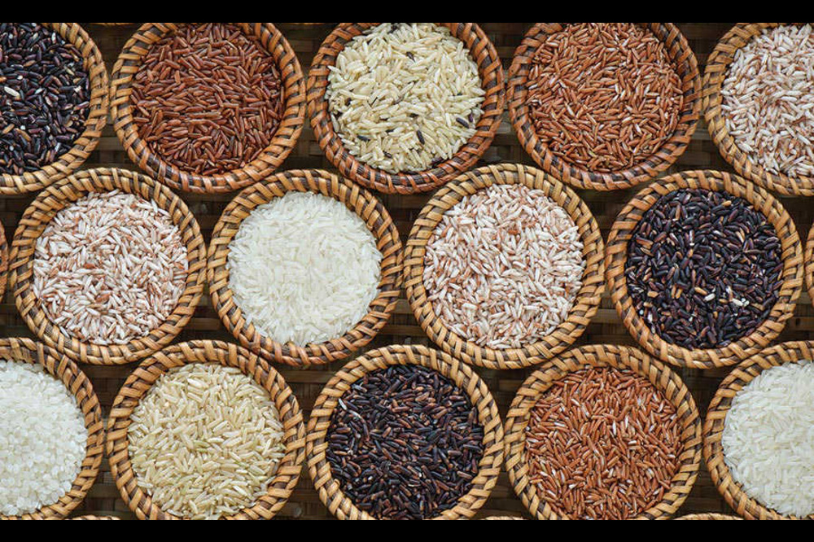

Rice
As a cereal grain, domesticated rice is the most widely consumed staple food for over half of the world's human population, particularly in Asia and Africa. It is the agricultural commodity with the third-highest worldwide production, after sugarcane and maize
Cost of Planting Rice
It costs around Rs.27,940 for cultivating Basmati rice in one acre land. However, slight changes may happen in total cost of cultivation depending upon various factors like pest incidence, climatic conditions and other abiotic conditions.
Return after selling Rice
the farmer can get a net income of Rs. 50,975 from 1-acre Basmati rice cultivation, if the crop was maintained properly. There might be little differences in costs depending upon the various factors like variety, market, labor demand, climatic conditions, and incidence of various pests and diseases, etc.